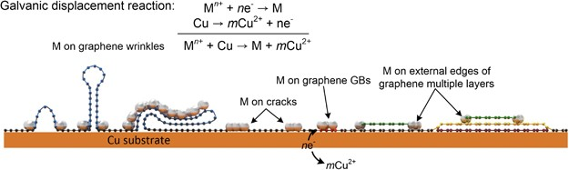

연구 개요
현재 연세대학교 BLISS Lab을 이끄는 서정목 교수가 당시 연세대학교 전기전자공학부 나노바이오소자연구실(Nanobio Device Laboratory)에서 공저자로 참여한 연구로, 습식 갈바닉 치환 반응을 이용해 화학기상증착(CVD) 그래핀의 결함 부위에 팔라듐 나노입자를 선택적으로 형성했습니다. 면저항은 약 1 kΩ/sq에서 투과율 91.3% 조건의 173 Ω/sq로 감소했으며, 면저항 154 Ω/sq의 팔라듐 장식 그래핀으로 만든 투명 히터는 12 V에서 94.4 °C에 도달해 일반 그래핀 히터의 60.6 °C보다 높았습니다.
연구 배경
CVD 그래핀은 대면적 생산이 가능하지만 성장 과정에서 결정립계, 주름, 균열이 생기며, 이 때문에 단층 그래핀의 면저항은 이론값인 약 30 Ω/sq보다 훨씬 높은 1 kΩ/sq 이상입니다. 결정립 크기 확대, 금속 나노와이어로 결정립 연결, 원자층 증착을 이용한 선택적 결함 보수 등 기존 방법은 복잡한 처리, 고가 장비, 긴 공정 시간을 필요로 합니다. 금속 나노입자로 균열을 채우는 용액 공정도 보고되었으나 결정립계와 주름은 다루지 못했습니다.
설계와 접근
구리 포일 위에서 성장한 그래핀을 포일째 PdCl2 수용액에 담급니다. 그래핀을 완충층으로 하는 이 갈바닉 치환 반응에서 아래의 구리는 산화되어 녹는 양극으로, 그래핀은 팔라듐 환원에 필요한 전자를 전달하는 음극으로 작용합니다. 결함 부위는 기저면보다 화학적으로 불안정하므로 낮은 PdCl2 농도에서는 팔라듐이 결정립계, 주름, 구리 피로 균열 위 영역, 다층 영역의 노출된 가장자리에 우선 핵생성합니다. 따라서 팔라듐 배열은 결함을 장식하는 동시에 결함의 종류와 위치를 드러내는 역할을 합니다.

구리 위 그래핀의 결함 부위에서 갈바닉 치환으로 입자가 형성되는 과정을 보여 줍니다.
Juree Hong, Jae-Bok Lee, Sanggeun Lee 외. “A facile method for the selective decoration of graphene defects based on a galvanic displacement reaction”. Figure 5. DOI: 10.1038/am.2016.42. CC BY 4.0. 그림 내용은 변경하지 않았습니다.
평가 방법
PdCl2 농도를 0.01~5 mM 범위에서, 반응 시간과 함께 바꾸어 가며 전계방출 주사전자현미경, 구면수차 보정 주사투과전자현미경과 제한시야 회절, 마찰력 현미경, 라만 분광으로 증착 양상을 분석했습니다. 면저항은 4탐침법으로, 광투과율과 함께 측정했습니다. 일반 그래핀과 팔라듐 장식 그래핀으로 투명 히터(20 mm × 20 mm)를 만들어 12 V 정전압으로 구동하고 적외선 열화상 카메라로 온도를 측정했으며, 곡률 10 mm의 굽힘 조건에서도 시험했습니다.
연구 내용과 주요 결과
증착 선택성은 농도에 따라 달라졌습니다. 5 mM 용액에서 5분 반응하면 연속적인 팔라듐 막이 형성되었고, 0.5 mM을 넘으면 선택성이 없었으며, 선택적 증착은 0.5 mM 미만에서만 관찰되었습니다. 팔라듐 나노입자의 평균 크기는 약 12 nm였습니다. 다각형 팔라듐 선을 경계로 나뉜 영역들의 회절 패턴은 격자 방향이 서로 달라 이 선이 결정립계임을 보여 주었습니다. 평행한 팔라듐 선은 간격이 약 200 nm인 구리 피로 균열과 일치했고, 결정립계가 없는 단일 도메인 내부에도 팔라듐 선이 생겨 주름 역시 핵생성 자리로 작용함을 확인했습니다. 적층된 다층 영역에서는 노출된 외부 가장자리에만 팔라듐이 형성되고 다른 층에 덮인 내부 가장자리에는 형성되지 않아, 적층 구조를 추적하는 데 활용할 수 있었습니다.
라만 스펙트럼에서 D, G, 2D 피크 세기의 변화는 작아 격자 손상이 적은 것으로 나타났습니다. 0.1 mM PdCl2에서 10분 반응한 시료에서는 G 피크가 1580에서 1595 cm−1로, 2D 피크가 2680에서 2688 cm−1로 이동했으며, 저자들은 이를 팔라듐에 의한 정공 도핑으로 해석했습니다. 같은 조건에서 나노입자가 나노와이어 형태로 이어졌고 면저항은 173 Ω/sq로 약 83% 감소했습니다. 투과율은 일반 그래핀의 약 97%에서 91.3%로 낮아졌습니다. 저자들은 비교 대상으로 HNO3 도핑 그래핀에서 보고된 약 125 Ω/sq(투과율 97.4%)를 제시했습니다.
12 V 히터 시험에서는 면저항이 낮을수록 정상상태 온도가 높았습니다. 면저항 154 Ω/sq의 팔라듐 장식 그래핀 히터는 94.4 °C, 일반 그래핀 히터는 60.6 °C에 도달했습니다. 곡률 10 mm의 반복 굽힘 시험 초기에 최고 온도가 85.6 °C로 약 9% 낮아진 뒤 이후 굽힘 동안 유지되었으며, 저자들은 일부 나노입자의 탈착과 접촉저항 증가를 원인으로 보았습니다. AgNO3 용액으로 시험했을 때도 은이 결함 부위에 선택적으로 증착되었습니다.
남은 과제
저자들은 팔라듐 배열만으로는 결정립계와 주름을 구별하기 어렵고, 마찰력 현미경으로는 다층 영역의 정확한 적층 순서를 확정할 수 없으며, 면저항 감소에 대한 화학적 도핑과 추가 전도 경로의 기여를 현재 실험 구성으로는 분리하기 어렵다고 밝혔습니다.
함께 읽을 연구
Selective metal deposition at graphene line defects by atomic layer deposition
이 논문은 원자층 증착(ALD)을 이용한 그래핀 선 결함의 선택적 금속 증착을 결함 선택적 금속 형성의 선행 방법으로 인용합니다. 이 연구는 기상 공정 대신 용액 속 갈바닉 치환 반응을 사용하며, 구리 성장 기판이 팔라듐 증착에 필요한 전자를 공급합니다.
초록을 참고한 소개RESEARCH NEWS
연구 소식
미확인 후보와 접근 제한 (1)
미확인 후보 · Transparent Heater [2/2] ↗
해설에 사용한 자료
이 해설은 오픈액세스 출판사 PDF 본문과 그림 설명을 바탕으로 했으며, 보충 그림·표·영상은 검토하지 않았습니다. 장식 후 투과율의 측정 파장은 본문에 500 nm, 그림 6 설명에 550 nm로 서로 다르게 적혀 있습니다.